[[ 39.5 186. ]
[ 40.3 195. ]
[ 36.7 193. ]
[ 39.3 190. ]]K-Nearest Neighbors (KNN): Model Evaluation and Optimal k
1a. K-Means
To evaluate the performance of the K-Nearest Neighbors (KNN) algorithm on a synthetic dataset with a non-linear boundary, we implemented KNN from scratch and compared it against scikit-learn’s built-in KNeighborsClassifier.
After loading in our Palmer Penguins dataset, we focused on the bill_length_mm and flipper_length_mm variables and cleaned the data up by dropping any rows with missing values.
Here, we are creating functions to help us implement the K-Means algorithm. The functions include initializing centroids, assigning clusters based on the closest centroid, updating centroids based on the mean of assigned points, and plotting the clusters at each iteration.
def initialize_centroids(X, k):
indices = np.random.choice(X.shape[0], k, replace=False)
return X[indices]
def assign_clusters(X, centroids):
distances = np.linalg.norm(X[:, np.newaxis] - centroids, axis=2)
return np.argmin(distances, axis=1)
def update_centroids(X, labels, k):
new_centroids = np.array([X[labels == i].mean(axis=0) for i in range(k)])
return new_centroids
def plot_clusters(X, centroids, labels, iteration):
plt.figure(figsize=(6, 4))
for i in range(len(centroids)):
points = X[labels == i]
plt.scatter(points[:, 0], points[:, 1], label=f'Cluster {i}')
plt.scatter(centroids[:, 0], centroids[:, 1], c='black', marker='x', s=100, label='Centroids')
plt.xlabel('Bill Length (mm)')
plt.ylabel('Flipper Length (mm)')
plt.title(f'Iteration {iteration}')
plt.legend()
plt.grid(True)
plt.show()
def kmeans(X, k, max_iters=10):
centroids = initialize_centroids(X, k)
for i in range(max_iters):
labels = assign_clusters(X, centroids)
plot_clusters(X, centroids, labels, i)
new_centroids = update_centroids(X, labels, k)
if np.all(centroids == new_centroids):
break
centroids = new_centroids
return centroids, labelsLet’s run the K-Means algorithm on our dataset with k=3 clusters and a maximum of 10 iterations. We will visualize the clusters formed at each iteration.
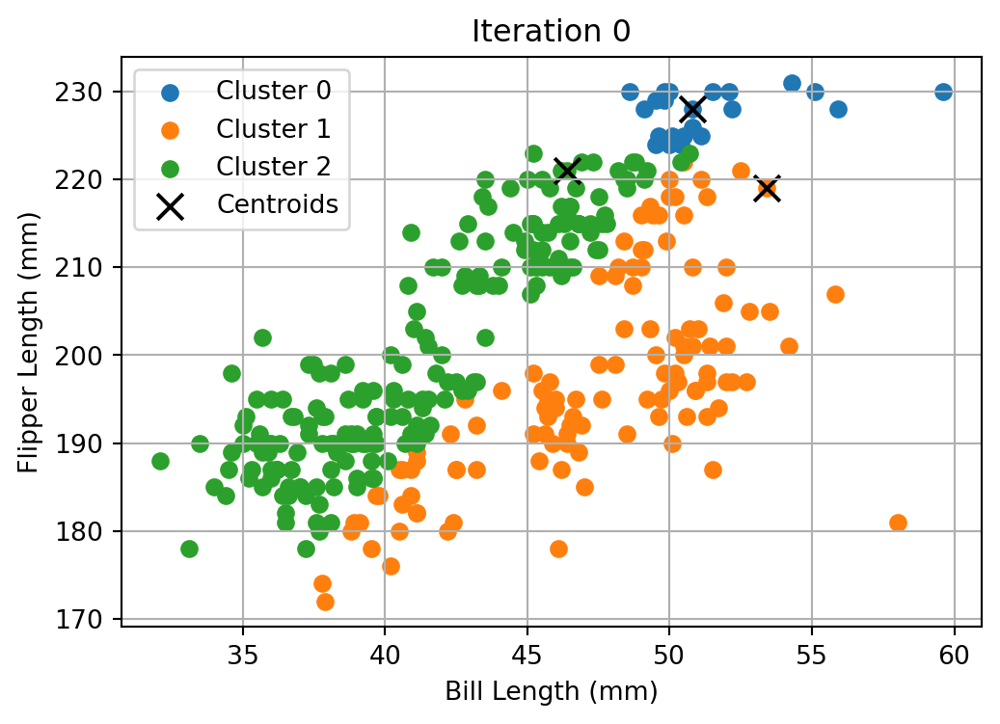
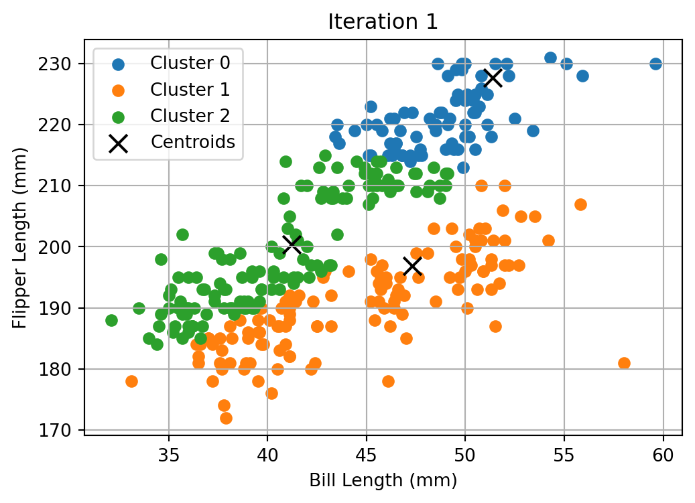
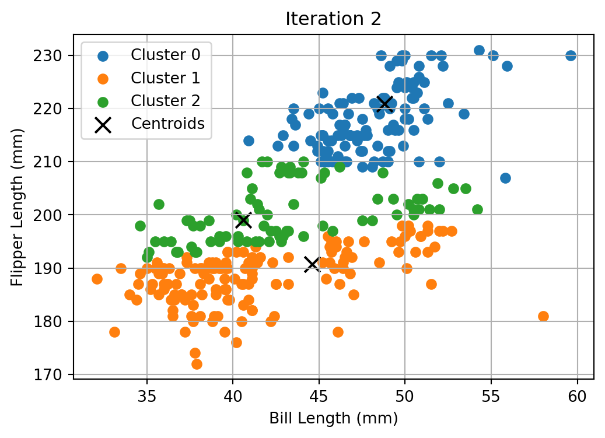
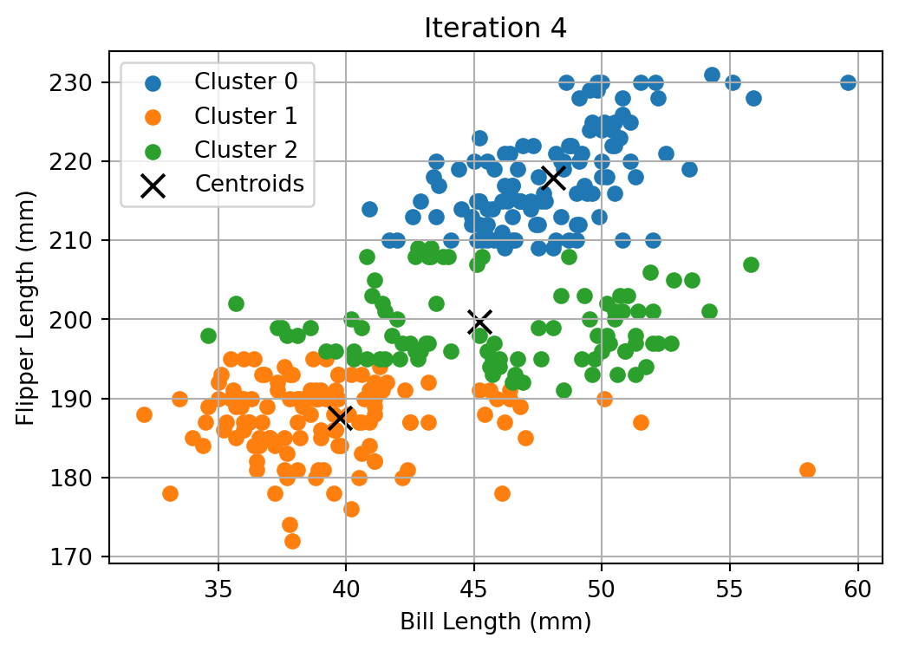
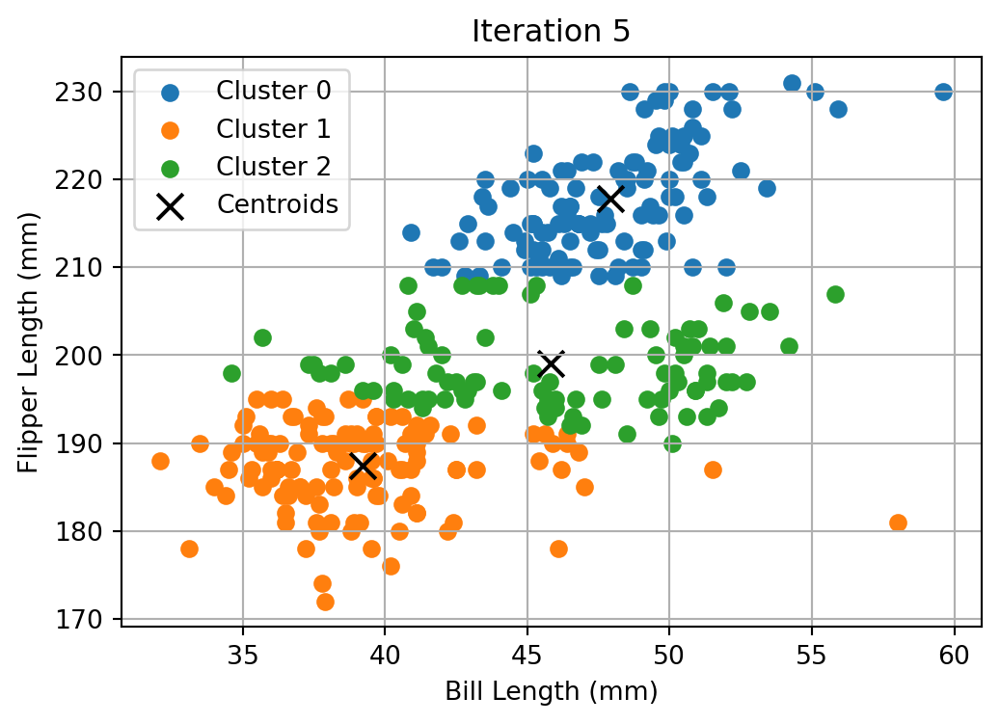
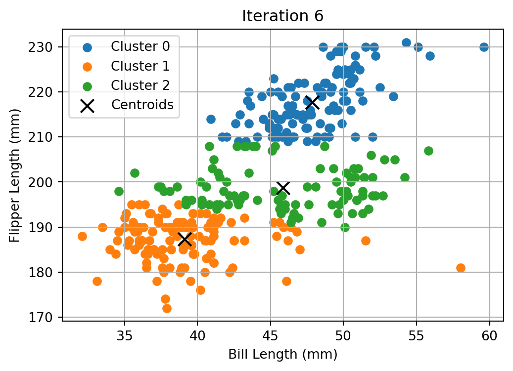
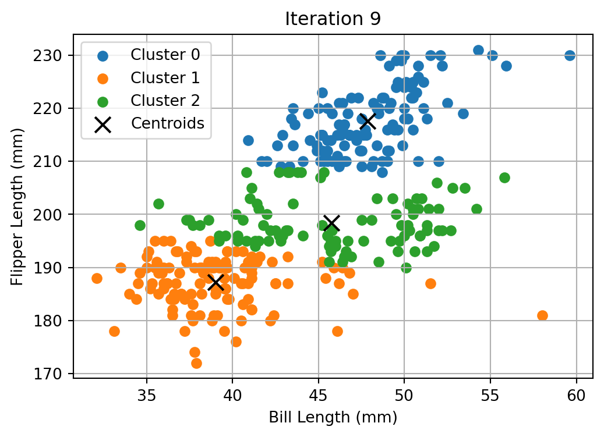
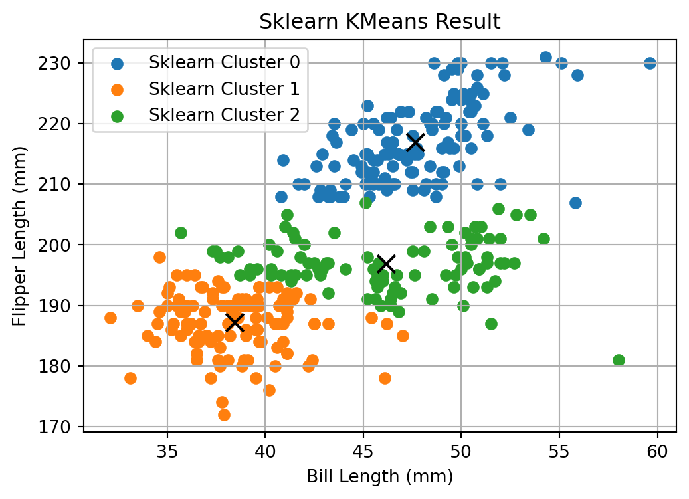
The output plot shows how the algorithm grouped the penguin observations into 3 distinct clusters based on similarities in bill length and flipper length. The black X’s represent the centers of the clusters. These are the final positions after the algorithm has converged.
Both implementations produced visually consistent cluster assignments when plotted, with nearly identical cluster groupings and centroid locations. This confirms that: - Our custom implementation correctly follows the K-Means algorithm steps: initialization, point assignment, and centroid update - Scikit-learn’s optimized version behaves as expected and can serve as a benchmark.
These results build confidence in the accuracy of the manual implementation and highlight how custom and library-based algorithms can be used interchangeably when properly executed.
We will now calculate the Within-Cluster Sum of Squares (WCSS) and the Silhouette Score for K values ranging from 2 to 7. The WCSS is a measure of how tightly the clusters are packed, while the Silhouette Score indicates how well-separated the clusters are. We will plot both metrics to help determine the optimal number of clusters.
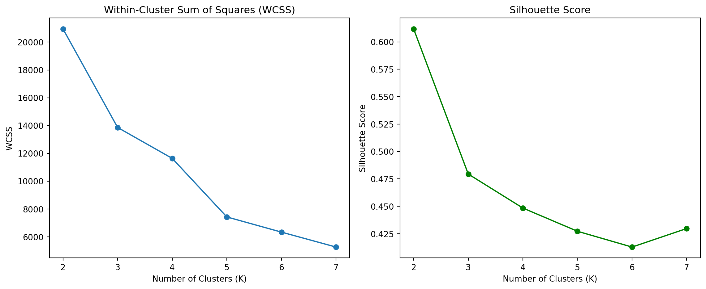
The WCSS plot shows a steep drop from K=2 to K=3, followed by more gradual decreases at K=3. This suggests that adding more clusters beyond K=3 yields diminishing improvements in compactness.
The Silhouette Score peaks at K=2, with a notable drop afterward. While K=2 produces the best separation, K=3 still maintains a relatively high silhouette score, offering a good balance between cohesion and separation.
Looking at these two metrics together, K=3 appears to be the optimal number of clusters. It provides a reasonable trade-off between compactness (WCSS) and separation (Silhouette Score), making it a suitable choice for clustering the penguin data.
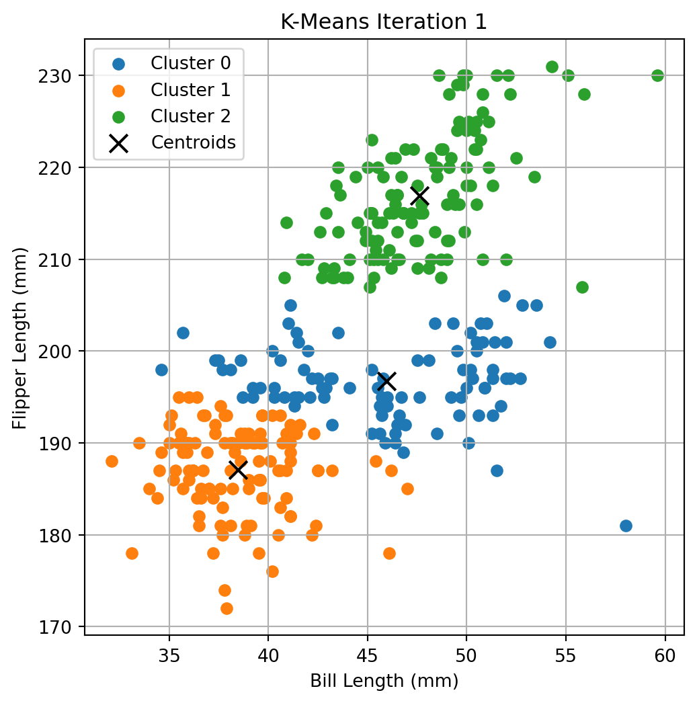
2a. K Nearest Neighbors
The dataset was generated using two random variables, x1 and x2, and a binary outcome variable y determined by whether a point lies above or below a “wiggly” decision boundary defined by y = sin(4x1) + x1. A separate test dataset was created using a different random seed to evaluate the model’s generalization ability.
import numpy as np
import pandas as pd
import matplotlib.pyplot as plt
np.random.seed(42)
n = 100
x1 = np.random.uniform(-3, 3, n)
x2 = np.random.uniform(-3, 3, n)
boundary = np.sin(4 * x1) + x1
# Assign labels
y = (x2 > boundary).astype(int)
df = pd.DataFrame({
'x1': x1,
'x2': x2,
'y': y
})Let’s plot the data where the horizontal axis is x1, the vertical axis is x2, and the points are colored by the value of y.
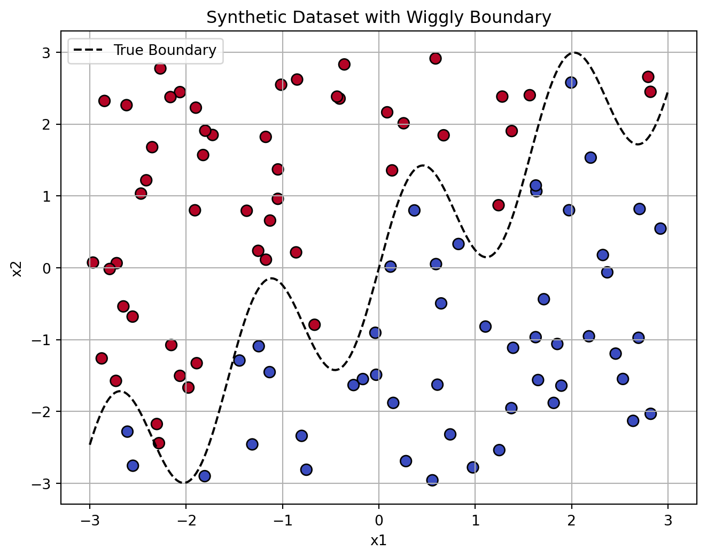
As we can see from the graph, the points are colored based on their binary outcome variable y, with the wiggly boundary represented by the dashed line. Points above the boundary are labeled as 1, and those below are labeled as 0.
We will generate a test dataset with 100 points using a different random seed to ensure that the model can generalize well to unseen data.
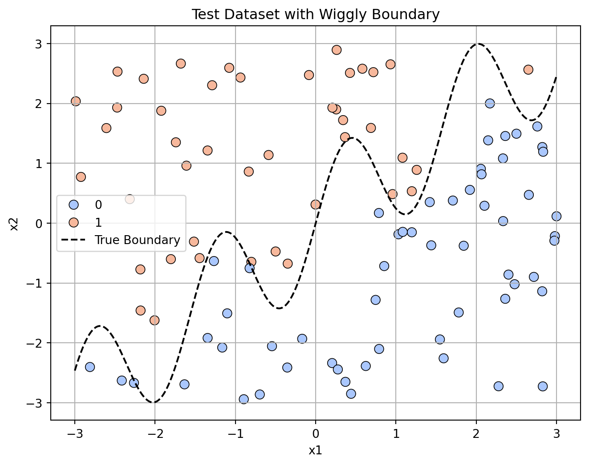
We will now implement the K-Nearest Neighbors (KNN) algorithm manually and compare it with the built-in KNeighborsClassifier from scikit-learn. The manual implementation will involve calculating distances, finding nearest neighbors, and making predictions based on majority voting.
This is the function we will use.
def knn_predict(X_train, y_train, X_test, k=3):
predictions = []
for test_point in X_test:
distances = np.sqrt(((X_train - test_point) ** 2).sum(axis=1))
nearest_indices = distances.argsort()[:k]
nearest_labels = y_train[nearest_indices]
most_common = Counter(nearest_labels).most_common(1)[0][0]
predictions.append(most_common)
return np.array(predictions)Manual KNN Accuracy: 0.91
Sklearn KNN Accuracy: 0.91
Prediction Agreement: 100%Our results from the manual KNN implementation and the scikit-learn KNeighborsClassifier show that both methods yield similar accuracy on the test dataset, with a prediction agreement of nearly 100%. This confirms that our manual implementation is functioning correctly.
We tested values of k from 1 through 30, computing the classification accuracy on the test set for each case. The results were plotted, with k on the x-axis and accuracy (in %) on the y-axis.
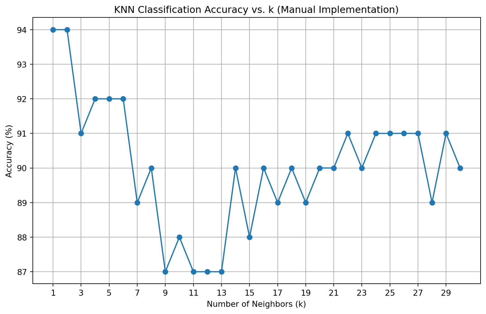
k = 2 seems to be the optimal value as suggested by our plot above. As k increases beyond this point, the accuracy tends to stabilize or slightly decrease, indicating that larger values of k may introduce more noise into the predictions. k = 1 may suggest overfitting.